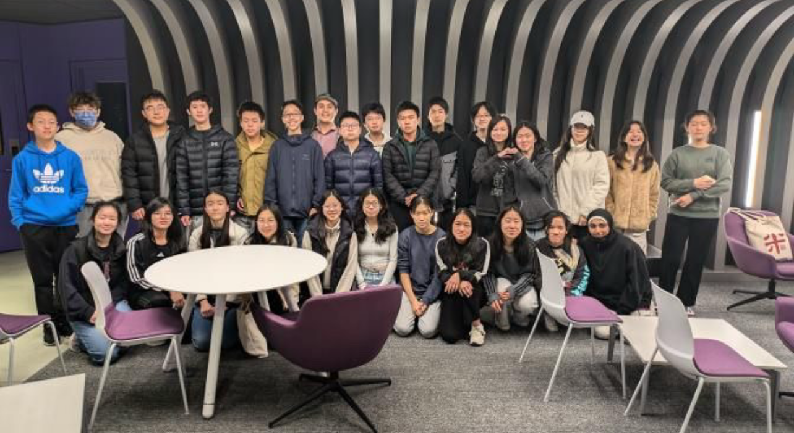

The Science Team is for students who are interested in attending science challenges where we will compete with other schools. Students will participate in events that test their various scientific knowledge that they have learned in class. The club will have weekly meetings leading up to competition day in order to make sure all members are prepared. New members are always welcome to attend meetings even if they don't plan to attend competition day.
I competed for my school Richmond Secondary's Maroon Ponies Junior Science Team in KPU Science Challenge Design in 2024
Design rules:
Students will build a boat that uses a provided propeller to race down an artificial pond against another team in a double-elimination tournament. Winners of each group will compete at the end of the day in a championship tournament. Advance preparation: The boat must always fit into a 50 cm sizing cube during the event. The hull of the boat must be student-made using common hobby materials such as paper, metal foil, thin plastic, or wood. It is not acceptable to use a ready-made toy or a kit for this challenge. A 3-D printed hull is allowed provided teams provide photos to verify that they did the work themselves. The judges reserve the right to veto any design that they deem counter to the spirit of the rules. Check in advance if you are unsure. The boat is to be powered by a small battery powered propeller. The boat must have a flag placed at the front of the boat that extends above the water to break the timing laser beams.